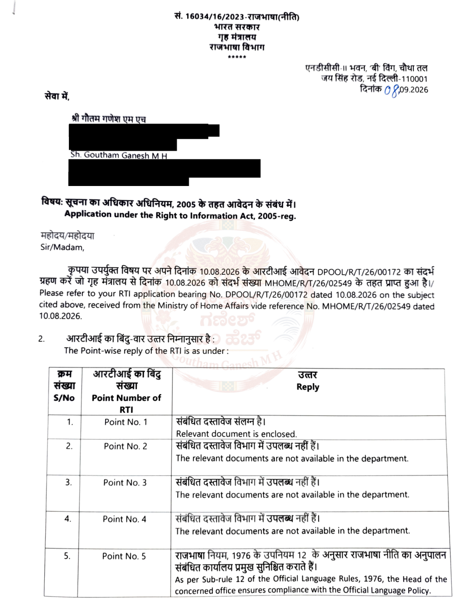
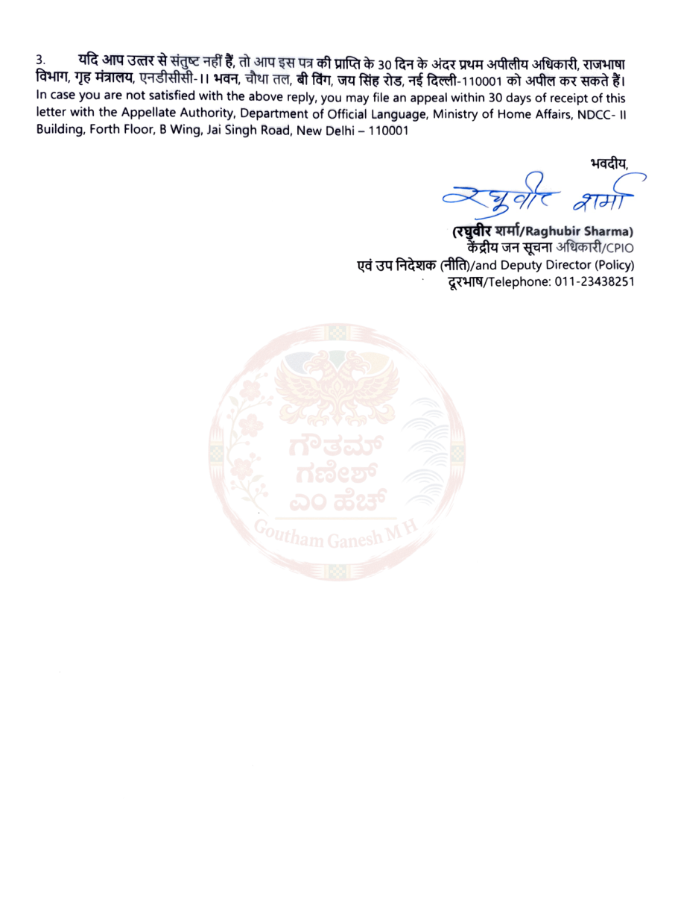
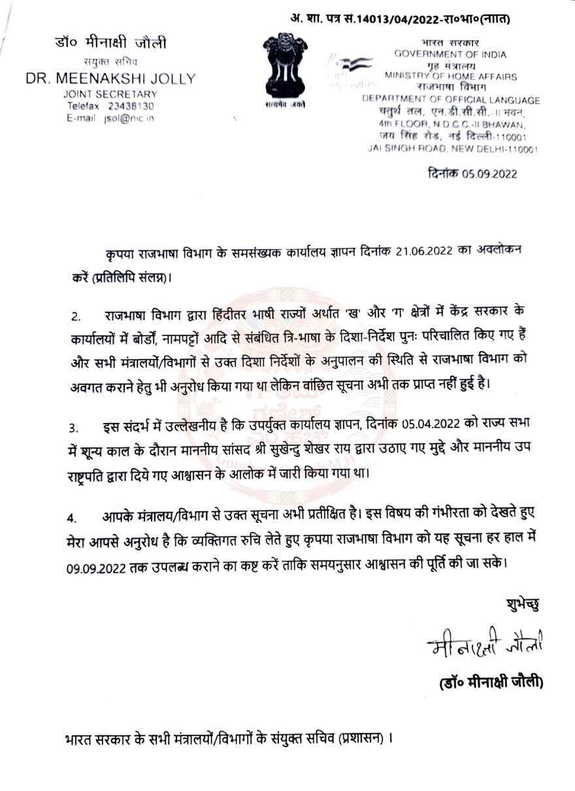

The department that wrote the rule says it keeps no record of whether anyone follows it
The department that issued OM 14013/04/2022 says it holds no record of compliance with its own order. The only document it sent is a 2022 reminder saying ministries had not reported.

DPOOL/R/T/26/00172What was asked, and what came back
| 1Circulars issued under the OM | Encloses the department's D.O. letter of 05.09.2022: a reminder to all ministries that the compliance status asked for in the 21.06.2022 OM had not been received, asking for it by 09.09.2022 |
|---|---|
| 2Action taken to use Kannada | "The relevant documents are not available in the department" |
| 3Inspection / compliance reports | "The relevant documents are not available in the department" |
| 4Corrective action on non-compliance | "The relevant documents are not available in the department" |
| 5Officer responsible for monitoring | Rule 12, OL Rules 1976: the head of each office |
Why it matters
The department that wrote the order says it has no documents on the action taken under it, on inspections or compliance reports, or on corrective action. The only document it sent is its own reminder of 05.09.2022, which says ministries had not reported compliance, and that the OM followed an issue raised in the Rajya Sabha on 05.04.2022 and an assurance given by the Vice-President. Four years on, the reply contains no compliance report at all.
Machine translation by Google Translate, provided only to help readers. It may contain errors. Only the original Hindi document is authoritative.



A. Sha. Letter no. 14013/04/2022-National Policy (Policy) Dr. Meenakshi Jolly, Joint Secretary Government of India, Ministry of Home Affairs, Department of Official Language 4th Floor, NDCC-II Building, Jai Singh Road, New Delhi-110001 Date 05.09.2022
Please refer to the Office Memorandum of even number dated 21.06.2022 of the Department of Official Language (copy attached).
2. The Department of Official Language has re-circulated the three-language guidelines related to boards, name plates etc. in the Central Government offices in non-Hindi speaking states i.e. 'B' and 'C' regions and all the Ministries/Departments were also requested to inform the Department of Official Language about the status of compliance with the said guidelines but the desired information has not been received yet.
3. In this context, it is noteworthy that the above mentioned office memorandum was issued in the light of the issue raised by Hon'ble MP Shri Sukhendu Shekhar Rai during Zero Hour in Rajya Sabha on 05.04.2022 and the assurance given by the Hon'ble Vice President.
4. The above information is still awaited from your Ministry/Department. Considering the seriousness of this matter, I request you that taking personal interest, please make efforts to provide this information to the Department of Official Language by 09.09.2022 so that the assurance can be fulfilled on time.
well wishes, (Dr. Meenakshi Jolly)
Joint Secretaries (Administration) of all Ministries/Departments of the Government of India.